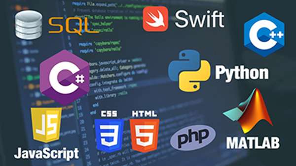
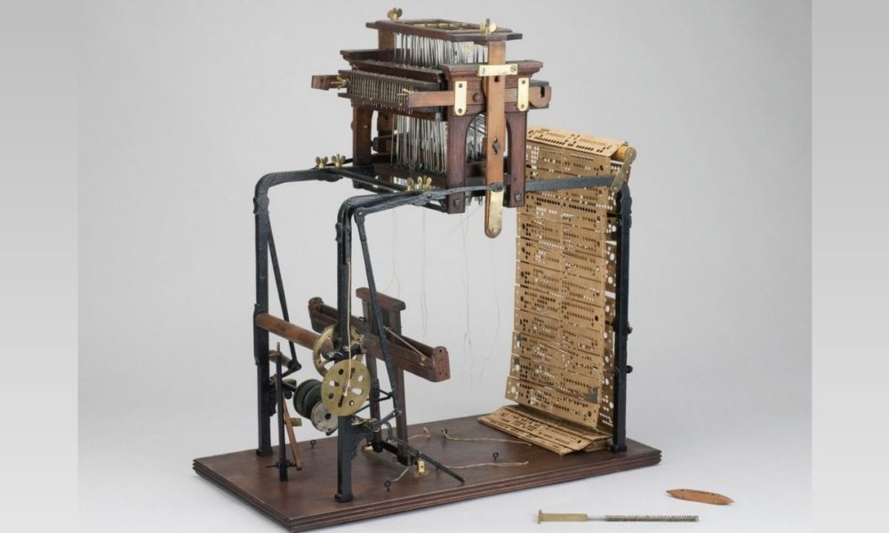

Lenguajes de programacion
El lenguaje de programacion fue diseñado para realizar procesos que pueden ser llevados a cabo por máquinas como las computadoras. Pueden usarse para crear programas que controlen el comportamiento físico y lógico de una máquina. Está formado de un conjunto de símbolos y reglas sintácticas y semánticas que definen su estructura y el significado de sus elementos y expresiones.
⠀
Historia: Los primeros lenguajes de programación preceden a la computadora moderna. En un inicio los lenguajes eran códigos. La máquina del telar de Jacquard, creada en 1801, utilizaba los orificios en tarjetas perforadas para representar los movimientos de un brazo de la máquina de tejer, con el objetivo de generar patrones decorativos automáticamente.⠀
⠀
Charles Babbage inventó su computadora en el año 1822. El necesito un lenguaje para poder comunicarse con esta máquina. Estos primeros lenguajes de programación estaban muy unidos a la computadora y fueron creados para cada una de ellas. Este lenguaje era muy rudimentario y consistía en la programación de los diferentes cambios de engranajes que ejecutaban los cálculos. Más adelante en el año 1942 se construyó la ENIAC, computadora que se programaba ya con interruptores y era preciso reescribir el sistema entero para cada nuevo programa. Era un lenguaje de programación muy tedioso.⠀
en el año 1957, aparece el primero de los lenguajes de programación más importantes, el FORTRAN (del inglés Formula Translation). Este fue el primero de los lenguajes de programación de alto nivel. Otro lenguaje de programación importante fue el PASCAL, que apareció en el año 1968. Este lenguaje de programación se uso como uno de los mejores lenguajes para enseñar programación a los alumnos. El lenguaje de programación C fue otro de los importantes a lo largo de la historia de los leguajes de programación. Fue creado en 1972 por Dennis Ritchie para desarrollar los sistemas operativos Linux.⠀
Aqui hay algunos de los lenguajes de programacion mas populares:⠀
Java: Fue creado en 1995 • Java es un lenguaje de programación y una plataforma informática comercializada por Sun Microsystems. Hay muchas aplicaciones y sitios web que no funcionarán a menos que tenga Java instalado y cada día se crean más. Java es rápido, seguro y fiable. Desde portátiles hasta centros de datos, desde consolas para juegos, hasta súper computadoras.⠀

⠀
PHYTON: Creado en los finales de los años 80’s de código abierto, orientado a objetos, muy simple y fácil de entender Usado en aplicaciones Web, Inteligencia artificial.⠀

⠀
C: El lenguaje de programación C fue creado por Dennis Ritchie entre 1969 y 1973 Es un lenguaje potente y eficiente, permitiendo obtener programas rápidos y compactos. no esta orientado a ninguna área especial⠀

⠀
C++: Fue creado en 1983, es programación orientado a objetos surge como una continuación y ampliación del C. Considerado un lenguaje de medio nivel. Trata con objetos básicos como caracteres, números, etc… también con bits y direcciones de memoria.⠀

⠀
⠀
⠀
⠀